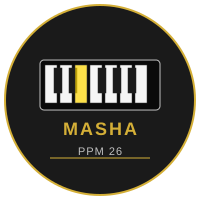

MASHA
Professional Piano Masha 26 (PPM 26)
Web-Based Interactive Piano Workstation
VOICES
Grand Piano
Warm Piano
Bright Piano
Electric Piano
Rhodes Piano
Harpsichord
Organ
Strings
Pad/Synth
Vibraphone
EFFECTS
Reverb
50%
Chorus
0%
MASTER
Volume
70%
Tempo (BPM)
METRONOME
START
120
BPM
TRANSPOSE
-
0
+
BEATS
None
Rock
Amapiano
Seben
Worship
Afro Beats
POWER
POWER OFF
POWER ON
MODES
Single Row
Dual Row
Two Player
SUSTAIN
Sustain Off
RECORD
Record
Stop
Play
Keys Played:
0
|
Voice:
Grand Piano
◀
▶
88-Key Weighted Hammer Action Keyboard